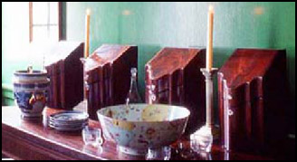

The Cost of Dining
It cost a lot to feed a whole family and the many, many guests who came to Mount Vernon. Washington had to keep careful records of all the money and resources he spent on food. He often worried he wouldn't have enough food for all of the guests that came to visit. In just one year, 677 guests came to Mount Vernon! That's a lot of people to feed and a lot of dinners to serve.
Dining was all about luxury, so Washington had to be careful to impress his guests without spending all of his money. The Washingtons made sure to serve a large variety of foods in expensive porcelain dishes that only the wealthy could afford. Having a lot of different foods from around the farm and the world would show his guests how successful he was. Though sometimes Washington had to cut back on the elegant meals, he said that "a glass of wine and a bit of mutton are always ready, and such as will be content to partake of them are welcome." He always had some food reserved for guests no matter the cost. Washington was careful with his money, though, and kept careful record of all his expenses.

Did you know?
 Washington bought three different tea sets for Mount Vernon. Tea sets included a teapot, cups, saucers, bowls and a variety of other dishes and utensils. Some tea sets could have over 100 different pieces.
Washington bought three different tea sets for Mount Vernon. Tea sets included a teapot, cups, saucers, bowls and a variety of other dishes and utensils. Some tea sets could have over 100 different pieces.